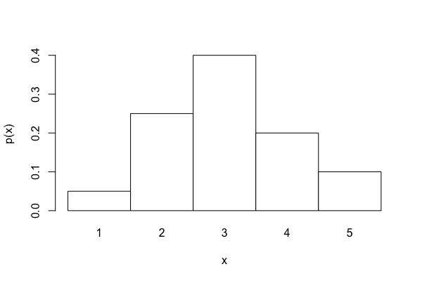
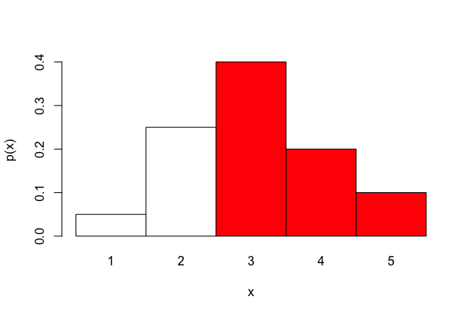
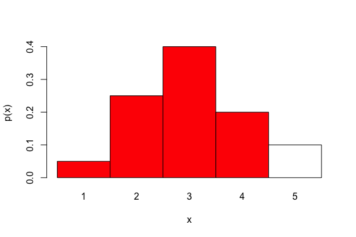
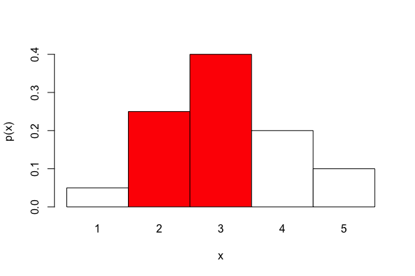
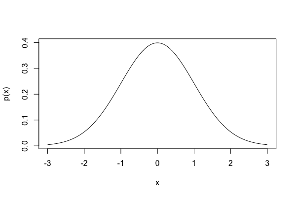
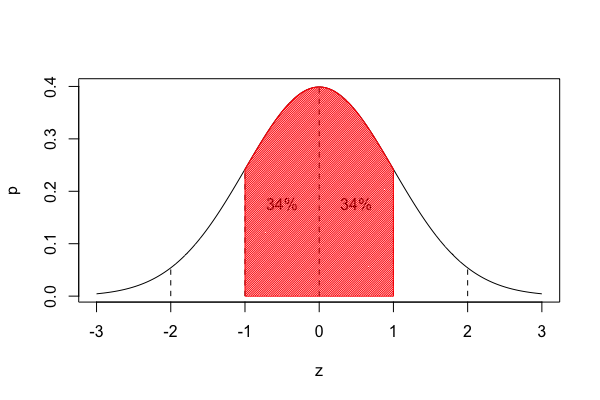
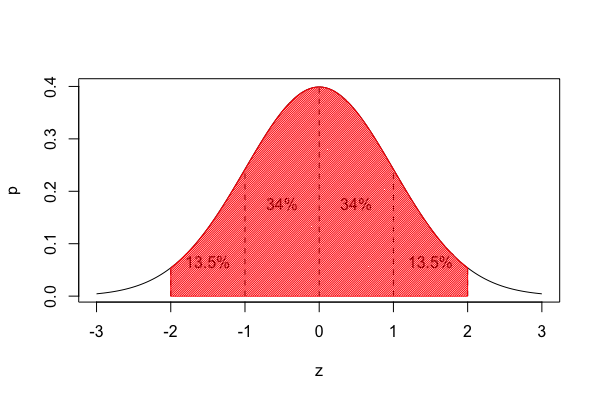
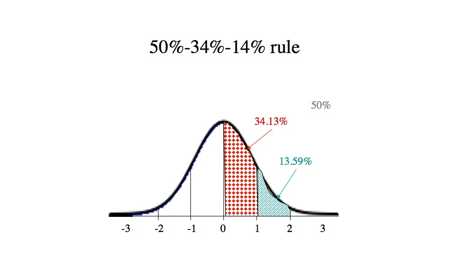
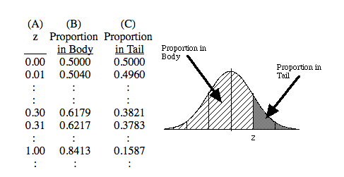

Week 5 lecture notes - PSYC 3330
So far this semester, we have used statistics to describe data. Now, we will begin using statistics as an inference tool. To do this, we need to discuss probability.
Definition
Suppose we have a list of possible outcomes, labeled A, B, C, D, and so on. Then:
\[ p(A) = \text{ "the probability of A" }=\frac{\text{number of outcomes classified as A}}{\text{total number of possible outcomes}} \]
Example: What is the probability of picking a king of spades from a standard deck of 52 cards?
Answer:
\[ p(\text{king of spades}) = \frac{\text{# of times king of spades appears}}{\text{number of cards in the deck}} = \frac{1}{52} \]
Example: What is the probability of picking a heart from a deck?
Answer:
\[ p(\text{heart}) = \frac{\text{# hearts in a deck}}{\text{number of cards in the deck}} = \frac{13}{52} =\frac{1}{4} = 0.25 \]
Probability distributions
The more common way we will encounter probability is as part of a probability distribution.
Example: Suppose we have 40 slips of paper, each labeled with one of the numbers 1,2,3,4,5. Specifically, assume they are labeled with the following frequencies:
| X | f |
|---|---|
| 5 | 2 |
| 4 | 10 |
| 3 | 16 |
| 2 | 8 |
| 1 | 4 |
If we compute the relative frequencies (as percentages of the total frequency), we get the following:
| X | f | p |
|---|---|---|
| 5 | 2 | 0.05 |
| 4 | 10 | 0.25 |
| 3 | 16 | 0.40 |
| 2 | 8 | 0.20 |
| 1 | 4 | 0.10 |
Visually, this distribution looks like the following graph:

This graph represents the probability distribution. Essentially, it tells us everything we would want to know about this particular situation. For example, suppose our task is to randomly select a slip of paper. We can then ask lots of questions, such as:
- What is the probability of selecting a 3?
- Answer: \(p(3) = 0.40\)
- What is the probability of selecting a 5?
- Answer: \(p(5) = 0.05\)
We can also ask more complex questions:
- What is the probability of selecting a slip of paper with a value greater than 2?
- Answer: \(p(x>2) = 0.40 + 0.25 + 0.05 = 0.70\)

- What is the probability of selecting a slip of paper with a value less than 5?
- Answer: \(p(x<5) = 0.10 + 0.20 + 0.40 + 0.25 = 0.95\)

- What is the probability of selecting a value greater than 1 and less than 4?
- Answer: \(p(1 < x < 4) = 0.20 + 0.40 = 0.60\)

The normal distribution
The probability distribution that we will use quite a bit this semester is known as the normal distribution. It is defined by the following equation:
\[ f(x) = \frac{1}{\sqrt{2\pi\sigma^2}}e^{\frac{-(x-\mu)^2}{2\sigma^2}} \]
where \(\mu\) is the mean and \(\sigma\) is the standard deviation.
More importantly for us, it looks like the following:

Technically, this curve depends on \(\mu\) and \(\sigma\). However, if we transform to \(z\)-scores, we can use ONE standardized distribution, known as the standard normal distribution.

We know lots of things about the standard normal curve:
- it is unimodal and symmetric
- 34% of the distribution lies within one standard deviation of the mean

- 95% of the distribution lies within two standard deviations of the mean

This is helpful. For example, consider that IQ scores are normally distributed with mean \(\mu=100\) and standard deviation \(\sigma=15\). Then we know the following:
- 68% of the population scores between 85 and 115
- 95% of the population scores between 70 and 130
- 2.5% of the population scores above 130
- 2.5% of the population scores below 70
In fact, we can modify this to have a nice "intuitive" rule for probabilities under the normal curve:
50-34-14 rule:
- 50% of the curve is above the mean
- 34% of the curve is between the mean and 1 SD
- 14% of the curve is between 1 SD and 2 SD

Examples:
- suppose a data set is normally distributed with \(\mu=40\) and \(\sigma=5\). Use the 50-34-14 rule to approximate the percentage of that data that is:
- above 45
- above 30
- above 35
- below 40
- below 45
- below 30
- below 35
- suppose a data set is normally distributed with \(\mu=45\) and \(\sigma=6\). Use the 50-34-14 rule to approximate the minimum score needed for a data point to be in the top:
- 2%
- 16%
- 50%
To make more exact computations, we will need to learn how to use the unit normal table. You can download one on our blackboard site, or use the one in the back of your textbook.
Using the unit normal table

- Column A: the \(z\) score
- Column B: probability of being LESS than \(z\) (proportion in body)
- Column C: probability of being GREATER than \(z\) (proportion in tail)
Finding probabilities:
- sketch the normal distribution, showing the mean & standard deviation
- sketch the score in question, being sure to place it on the correct side of the mean and roughly the correct distance from the mean
- decide if you need the probability of getting a score GREATER or LESS. Shade this area on your sketch.
- translate the X score into a Z-score
- Use the correct column (and sign) to find the probability in the unit normal table.
Example: Recall that IQ scores are normally distributed with \(\mu=100\) and \(\sigma = 15\).
- What is the probability of having an IQ of 125 or above?
- What is the probability of having an IQ of 80 or less?
Another type of problem: finding scores required for a certain probability:
Example: what IQ score do you need in order to be in top 5% of population?
Steps:
- sketch the normal distribution
- shade the region corresponding to the required probability
- locate the probability in the correct column of the table
- label the edge of the shaded region with the z-score from the table
- compute the corresponding raw score.
For this example, note that the upper tail is needed. So, we need to find p=0.05. From the table, this tells us z=1.65. So, \(X=M+Z\cdot SD = 100 + 1.65(15)=124.75\).
Final example: On a particular test, assume that \(\mu=50\) and \(\sigma=10\). If a person is in the bottom 30% of the class on this test, what is the highest score the person could have scored?